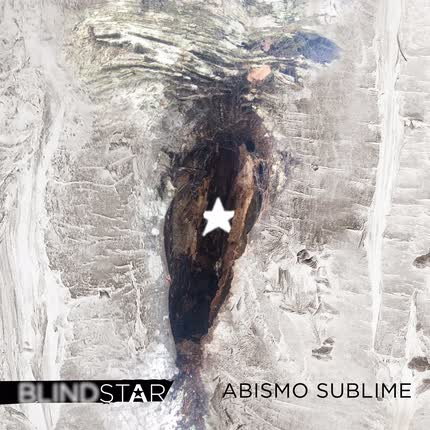

Media Partners Unto Ashes regresará con su primer álbum en 4 años, 'Orchids grow here' – Disponible en agosto a través de Project Records El 18 de agosto, a través de Projekt, se encontrará disponible el
Eventos Cadal (post punk, Chile) lanza "Fiesta Nueva", su primer disco, este jueves 22 de Junio en Bar de Rene 0:00 /0:15 1× @cadalbanda ya habla en serio. Su primer
Noticias "Curepedia: The A–Z of The Cure", biografía enciclopédica de The Cure será lanzada esta primavera 2023 White Rabbit, una editorial con sede en el Reino Unido, lanzará un
Side-Line Magazine Alemania abre una investigación penal contra el cantante de Rammstein, Till Lindemann Lindemann niega las acusaciones y lanzó un contraataque a través de sus abogados, al afirmar que emprenderían acciones legales contra “todas las acusaciones de esta naturaleza” .
Noticias Kiepja marcará el inicio del show de Haggard en Chile @kiepjaoficial anuncia en su Instagram que será la banda anfitriona del show
Noticias El Claustro ahora en Discord, conoce a Igor, el bot. Hemos lanzado nuestra Comunidad en Discord, la cual puedes revisar y acceder
Side-Line Magazine La 'Fila Cero' de Rammstein bajo escrutinio en Múnich, pero ¿qué es exactamente la Fila Cero? Rammstein, la banda que actualmente está en los titulares debido a las
Noticias Cleopatra Records reedita "Death Mix" de Rozz Williams Cassey, quien es la persona detrás del impresionante proyecto llamado "Rozz Williams
 Discos y Multimedia Blindstar lanza "Abismo sublime" y es un imprescindible Blindstar se consolida como una de las más fructíferas bandas dark, donde además -a mi criterio- los posiciona dentro del podivm las bandas chilenas.
Noticias Jueves 18 Mayo - Pre World Goth Day en Puerto Montt Les tenemos una gran noticia. Por primera vez, la ciudad de Puerto
Noticias Imposible no amarlos: The Cure se mofa de prensa absurda ¿Por qué los periodistas a menudo hacen preguntas tontas, especialmente en la
Discos y Multimedia Temple Solar lanza videoclip 'Bitter Love' La banda Chilena de Darkwave / Goth Rock Temple Solar ha publicado, en